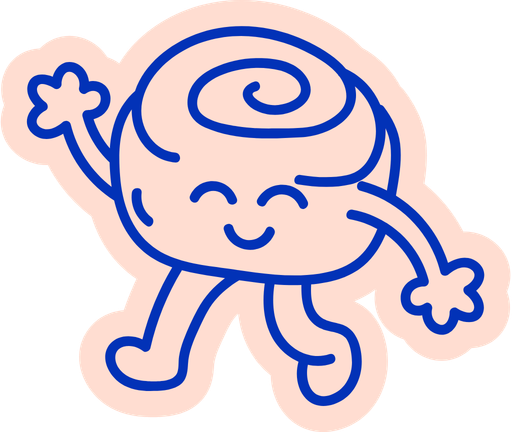
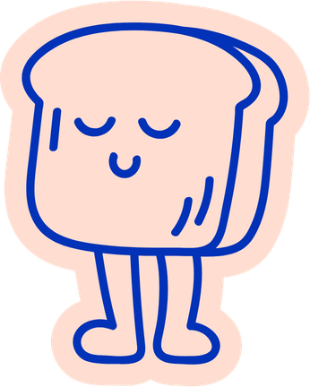
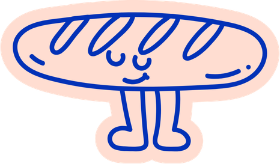

Le pain d'hier devient le petit-déjeuner de demain. Trempé dans l'œuf et la vanille, doré à la poêle, servi avec la fleur d'oranger de nos grand-mères. Bienvenue Au Pain Perdu.
Fabriqué le matin même, à partir de ce qu'on refuse de jeter.
Le pain perdu, c'est du pain rassis qu'on refuse de jeter — on le trempe, on le dore, on lui donne une seconde vie, souvent meilleure que la première.
C'est tout l'ADN de la maison. Le pain qui ne s'est pas vendu la veille devient le petit-déjeuner du lendemain. Les chutes de pâte feuilletée deviennent des sablés. Ici, le meilleur naît souvent de ce qu'on a failli abandonner.


Le pain de la veille, les chutes de pâte, les fanes de fruits — tout retrouve une place dans l'assiette.
Chaque tranche est trempée, puis dorée avec patience. Ça ne se presse pas, un bon pain perdu.
Le café qui va avec, la fleur d'oranger de nos grand-mères, et une équipe qui aime vraiment ça.